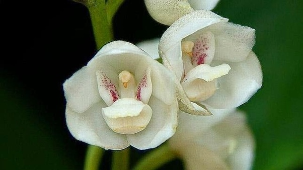

Simbolos Patrios
Bandera y Escudos

La bandera de la República de Panamá es el más conocido e importante de los símbolos patrios de la República de Panamá. Consiste en un rectángulo dividido en cuatro cuarteles: el superior izquierdo es una estrella azul de cinco puntas sobre fondo blanco; el superior derecho es de color rojo; el inferior izquierdo es de color azul; y el inferior derecho es una estrella roja de cinco puntas sobre fondo blanco.
Arbol Nacional

El nombre genérico del árbol Panamá deriva del latín “Stercus” que significa excremento, debido al olor característico de hojas y flores. Es de la misma familia que el árbol de cacao. Es el árbol nacional de la República de Panamá y se considera que éste originó el nombre del país. Fue declarado oficialmente con el Decreto de Gabinete No. 371 del 26 de noviembre de 1969.
Flor Nacional
Esta orquídea, conocida como «flor del Espíritu Santo» —que se caracteriza por tener pétalos de un color marfil intenso, adornados en el centro de su labelo con una bien definida y delicada paloma que florece entre julio y octubre—, es la flor nacional de Panamá. Fue declarada como tal el 21 de octubre de 1980 por la Asamblea Nacional de la República de Panamá. Es una especie de orquídea cuyos pétalos son de color blanco e incluso marfil. Hay quienes dicen que su forma les recuerda a una pequeña paloma. Es tal la magnitud simbólica que posee que todos los años durante el mes de septiembre se realiza en la localidad de Herrera en el pueblo de Las Minas una exposición con su nombre —la Expoferia del Espíritu Santo— para rendirle homenaje, exhibirla, contemplarla y promocionar artículos regionales.
Ave Nacional

La harpía (Harpia harpyja) es una especie de ave accipitriforme de la familia Accipitridae que vive en la zona neotropical. Es el águila más grande del Hemisferio Occidental y del Hemisferio Austral, y la única especie del género Harpia. Su hábitat es el bosque lluvioso. No se reconocen subespecies.